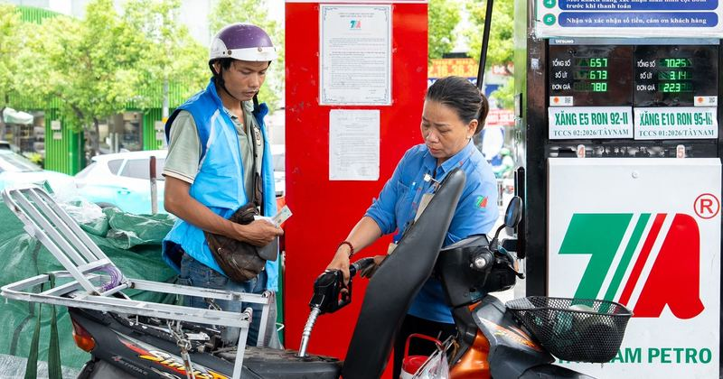

⚡Chính phủ đồng ý kéo dài thời gian giảm thuế với xăng dầu, nhiên liệu bay đến 30-9
Tiếp tục giảm một số loại thuế xăng dầu để hỗ trợ người dân, doanh nghiệp - Ảnh: HỮU HẠNH Cụ thể, Chính phủ đồng ý việc kéo dài thời hạn áp dụng thuế nhập khẩu ưu đãi, thuế bảo vệ môi trường, thuế giá